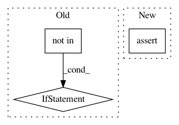

22b6e2d4d19e8557980c5600c71676e6ceed4915,mvpa2/clfs/gnb.py,GNB,_train,#GNB#,144
Before Change
self._norm_weight = 1.0/np.sqrt(2*np.pi*variances)
// Add "has_sensitivity" tag if classifier is linear
if params.common_variance \
and "has_sensitivity" not in self.__tags__:
self.__tags__ += ["has_sensitivity"]
if __debug__ and "GNB" in debug.active:
debug("GNB", "training finished on data.shape=%s " % (X.shape, )
+ "min:max(data)=%f:%f" % (np.min(X), np.max(X)))
After Change
else:
self._norm_weight = 1.0/np.sqrt(2*np.pi*variances)
assert params.common_variance == ("has_sensitivity" in self.__tags__)
if __debug__ and "GNB" in debug.active:
debug("GNB", "training finished on data.shape=%s " % (X.shape, )
+ "min:max(data)=%f:%f" % (np.min(X), np.max(X)))
In pattern: SUPERPATTERN
Frequency: 3
Non-data size: 3
Instances
Project Name: PyMVPA/PyMVPA
Commit Name: 22b6e2d4d19e8557980c5600c71676e6ceed4915
Time: 2019-05-03
Author: debian@onerussian.com
File Name: mvpa2/clfs/gnb.py
Class Name: GNB
Method Name: _train
Project Name: rtqichen/torchdiffeq
Commit Name: 625784c31f592f3b760b53faa0c2f31b57be238a
Time: 2020-07-30
Author: 33688385+patrick-kidger@users.noreply.github.com
File Name: torchdiffeq/_impl/odeint.py
Class Name:
Method Name: odeint
Project Name: nilmtk/nilmtk
Commit Name: 1250f47a9ad3a914783f26d1711692794c7ea031
Time: 2014-05-01
Author: jack-list@xlk.org.uk
File Name: nilmtk/pipeline/locategapsnode.py
Class Name: LocateGapsNode
Method Name: process